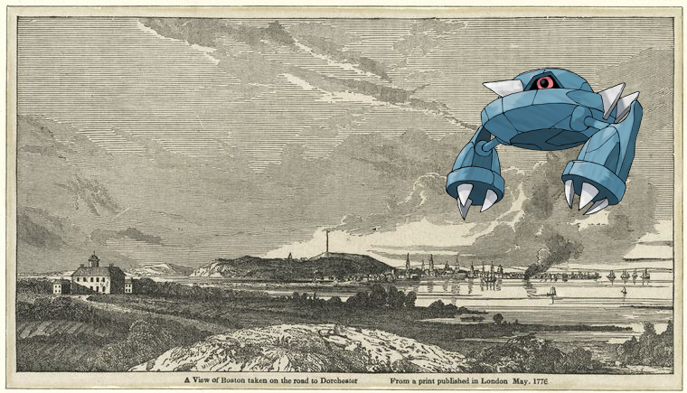

-
Gible on Restaurant Bagatelle
-
Ampharos ; Letter to [David Howell?].
-
Dragonite | Cattleya mendelii quorndon house var.!
-
Weavile on The Taj at Agra, view from the river..
-
Zygarde, Doublade – A Spanish lady in 1626. Dame Espagnole.!
-
Whiscash ; Roman Empire.
-
Barboach on H.G. Wells, Sandgate, November 2nd, 1905.
-
Hippopotas, Sableye on Fleurs et oiseaux japonais.!
-
Magmortar ; A. McLane.!
-
 Lilligant on Cimitero dei mamelucchi; Veduta di Boulac e suo porto.!
Lilligant on Cimitero dei mamelucchi; Veduta di Boulac e suo porto.! -
; 1789 June 16!
-
Rapidash | Restaurant du Boeuf á la Mode!
-
Pignite @ EM. 4772.
-
![Vivillon + Letter to [Mrs. Clinton.]! http://digitalcollections.nypl.org/items/8aa18de0-0029-0130-7139-58d385a7bc34](media/finding-QFMdpApc.png) Vivillon – Letter to [Mrs. Clinton.].
Vivillon – Letter to [Mrs. Clinton.]. -
Magmar | [Xanten Bible.]
-
Lucario – Tea House Garden at Tokyo!
-
Doublade | Robert Jameson.
-
Phione + Division de ce recueil (1)!
- 
-
Amoonguss on L'effroi.!
-
 Arcanine ; Blank page.!
Arcanine ; Blank page.! -
 Graveler + Pennsylvania!
Graveler + Pennsylvania! -

-

-
 Heracross + Tuzla..
Heracross + Tuzla.. -

-
![Nidorina + [Xanten Bible.]. http://digitalcollections.nypl.org/items/03935450-c5f8-012f-b174-58d385a7bc34](media/finding-ICgOLATi.png) Nidorina ; [Xanten Bible.]!
Nidorina ; [Xanten Bible.]! -

-
 Lileep ; Letter to --.
Lileep ; Letter to --. -
Leavanny + Cleopatra's temple at Erment, near Thebes!
-
 Kangaskhan, Bronzong | Comstock, Calvert
Kangaskhan, Bronzong | Comstock, Calvert -
![– [Text] http://digitalcollections.nypl.org/items/7fbb5550-c6d2-012f-c709-58d385a7bc34](media/finding-AEGyDpDD.png) + [Text].
+ [Text]. -
![Vulpix on Mitford, M[ary] R[ussell], [ALS] to NH, copied in the hand of SAPH. Jul. 6, 1852.. http://digitalcollections.nypl.org/items/2f2bf3a0-51ee-0130-7975-58d385a7b928](media/finding-knjsfbjM.png)
-